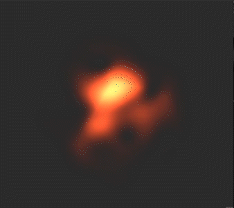
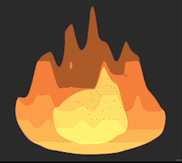
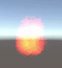
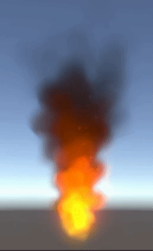

So far, we have created a 3D mesh of Fireboy, two fire shaders (one realistic, one stylized) for the body, and a couple of 3D particle-based fire simulations for the head. Altogether, we have completed most of the components of our objective of creating a realistic Fireboy. Most of what remains is to combine these constituent parts into a lively character.
Originally, we tried to port over our code from previous projects and use it as a baseline for this one, but we quickly realized that the new elements that creating Fireboy entails do not easily fit within the framework of a cloth simulator or general mesh editor. Instead, we opted to implement our Fireboy using the Unity platform so that we could avoid the tedious overhead of developing a base environment in which Fireboy could even exist.
We drew customized fire textures on a tablet and used High-Level Shading Language (HLSL) to program our shaders. Unity offers a plethora of features including a visual effect graph and debugging support for the rendering pipeline which facilitated our shader development process. Below, we display one of our shader graphs in Unity as well as the resulting shaders.
|

|

|
Unity also provides a C# scripting interface with which we are able to control the properties and evolution of the particle system that defines our fire. At its core, our model consists of an invisible cone whose base emits particles with our custom fire textures mapped onto them. The particles become darker and collectively resemble smoke as they rise, eventually dissipating into the sky at a certain height. A point light source is used to depict an ember at the bottom of the flame which can be observed spewing out sparks intermittently. The following two images show our initial attempt at a particle-based fire model and our final version, respectively.
|

|

|
Though we kept our planned tasks quite vague, we were able to accomplish much of what we had planned in our original proposal to our own surprise. We rendered a couple different types of 2D fire shaders and 3D fire simulations while familiarizing ourselves with the Unity environment. We are currently working on applying these elements to Fireboy’s mesh in a convincing manner. The method we are exploring at the moment is partitioning Fireboy into pieces and rendering different parts of him using different shaders and textures. Applying only one shader uniformly over Fireboy’s frame looks weird, so we will come up with a more aesthetically successful alternative. This problem is only exacerbated by the fact that the fire shaders are transparent, but we are looking into fixing it either by changing the alpha channel of the underlying textures. Going forward, our primary goals are to fix the 2D shader applied to Fireboy’s body and then inject the 3D fire particle system onto his head. In the coming week, we are also hopeful that we will be able to actually put Fireboy in motion with the animation rigging system in Unity.
Since the project has gone relatively smoothly so far, we intend to stick to our original schedule and put the finishing touches on Fireboy in the next week or so.